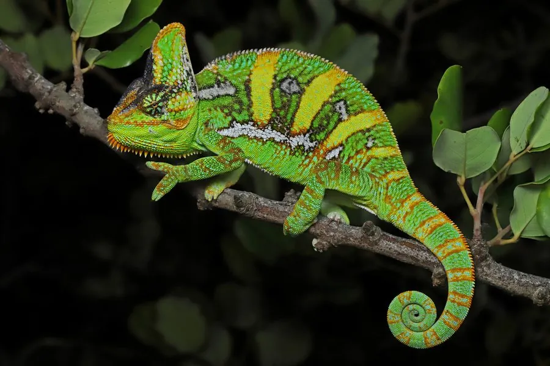

爬行动物 · 动物界
高冠变色龙 Chamaeleo calyptratus

原产阿拉伯半岛的变色龙，头顶有高耸的盔状突起，体色可随情绪变化，也是较易饲养的宠物变色龙之一。
- 分类
- 门脊索动物门纲爬行纲目有鳞目科变色龙科属变色龙属
- 栖息环境
- 阿拉伯半岛西南部的山地灌丛、干旱林地与河谷
- 地理分布
- 也门和沙特阿拉伯西南部；被引入美国佛罗里达等地
- 保护级别
- IUCN 无危（LC）；CITES 附录 II；非中国原产
物种志
高冠变色龙体长 35–60 厘米，雄性明显大于雌性，头部上方长有一个高耸的盔状突起，“高冠”之名由此而来。它的体色以绿色、黄绿色为底，身上分布着黄色、橙色和蓝绿色的条纹与斑点，雄性在求偶或示威时颜色会更加鲜艳；四肢细长，趾呈对握状，适合抓握树枝。
它原产于也门和沙特阿拉伯西南部的山地灌丛与干旱林地，树栖，多在白天活动，捕食昆虫，饮水时靠舔食叶面水珠。每年繁殖季雌蜥产卵约 30–60 枚，埋在土中，孵化期约 5–8 个月，巢温影响后代性别。它因外形奇特而成为受欢迎的宠物，人工繁殖个体较多；在中国它属于外来物种，饲养者不可随意放生，也不应捕捉野生个体。
形态与习性
- 食性昆虫为主，如蟋蟀、蚱蜢和蛾类
- 体长雄性 45–60 cm，雌性约 35 cm
- 体重约 80–180 g
- 寿命雄性约 5–8 年，雌性约 3–5 年
- 繁殖卵生，每窝 30–60 枚，孵化约 5–8 个月
- 活动节律昼行性，树栖
- 防御鼓胀身体、变色并张嘴威吓
趣味知识
- 高冠变色龙头顶的盔状突起是它最显眼的标志，雄性比雌性更发达。
- 它的两只眼睛可以独立转动，分别观察不同方向的目标。
- 高冠变色龙原产阿拉伯半岛，被引入美国佛罗里达后建立了野外种群。